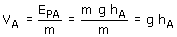

| Potencial (Cerca de un planeta) Se define potencial en un punto A de un campo gravitatorio como el trabajo que hace el campo por cada unidad de masa (kg) que se desplaza desde dicho punto A hasta la superficie (Origen de potencial) El potencial en un punto A se obtiene dividiendo la energía potencial de una masa m, colocada en dicho punto, entre la propia masa  |